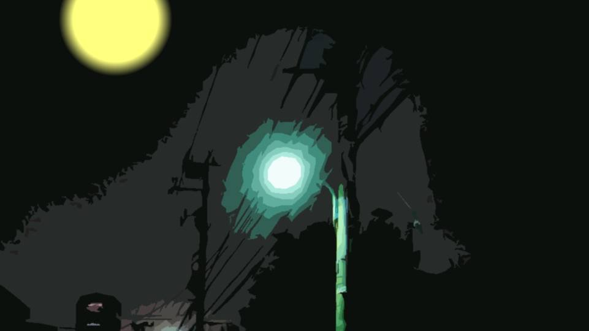
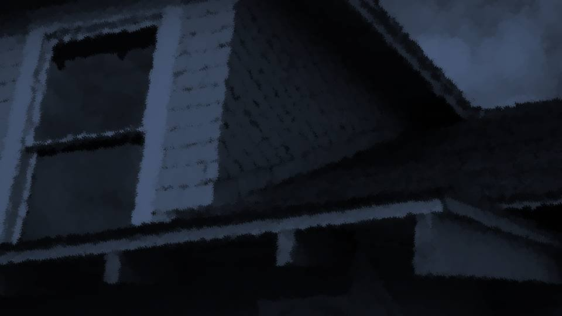
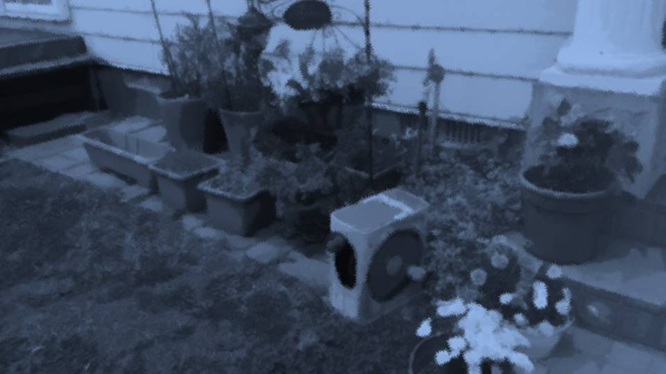

I Believed
"That takes me back. It's been two years already. I've gotten totally out of shape now, though."
Goto had made the tea. I took a sip.
It had cooled just enough, and a pleasant aroma and bitterness spread through my mouth.
Goto had made the tea. I took a sip.
It had cooled just enough, and a pleasant aroma and bitterness spread through my mouth.
"Why didn't you join a club in high school?"
"Hmm, no particular reason, but I guess I just burned out!"
"Burned out...?"
"I won't say I had zero interest in doing it in high school too. But I guess that was enough to satisfy me."
"Hmm, no particular reason, but I guess I just burned out!"
"Burned out...?"
"I won't say I had zero interest in doing it in high school too. But I guess that was enough to satisfy me."
"Because everyone acknowledged you?"
"Acknowledged...?"
"You improved that much by the end, everyone acknowledged you..."
"Hmm, I'm not so sure about that."
"............?"
"Acknowledged...?"
"You improved that much by the end, everyone acknowledged you..."
"Hmm, I'm not so sure about that."
"............?"
"This might sound bad, but I was a little lonely.
After all, I'm bad at sports by nature, and I was clinging on in that embarrassing way.
But being able to push on as a team with Goto made a big difference.
If I'd tried on my own, I probably wouldn't have gotten results, of course, and even if I had, I think it wouldn't have felt like enough."
"Because you worked at it with me...?"
"Because you worked at it with me...?"
"Vaguely, that's how it feels.
And it's only now that I think this, but even if I'd become a starter, I think whether the team got stronger is a separate question."
"Why do you say that? Back then, Senpai, you..."
"That kind of thing is done as a team, right? No matter how good each person is, without cohesion..."
"But Senpai, that's..."
"Why do you say that? Back then, Senpai, you..."
"That kind of thing is done as a team, right? No matter how good each person is, without cohesion..."
"But Senpai, that's..."
"I know what everyone thought of me.
If another me had been watching me back then, she'd have thought the same thing.
That this person was painful to watch."
"Come to think of it, you said so yourself. That you'd shown me your uncool side."
"I knew it, but it still frustrated me. When even I couldn't acknowledge myself, there was no way anyone else would."
"Come to think of it, you said so yourself. That you'd shown me your uncool side."
"I knew it, but it still frustrated me. When even I couldn't acknowledge myself, there was no way anyone else would."
"I still think that back then, Senpai, you were really cool.
Even if you, Senpai, can't acknowledge yourself, I acknowledge you."
"Heh."
"............?"
"It made me realize all over again that I really did want to be acknowledged. Not by anyone else. By you, Goto."
"Senpai... I knew it. Kogori-senpai, you're an amazing person. I'm sure you can stand up to any hardship. That's what I believe."
"Heh."
"............?"
"It made me realize all over again that I really did want to be acknowledged. Not by anyone else. By you, Goto."
"Senpai... I knew it. Kogori-senpai, you're an amazing person. I'm sure you can stand up to any hardship. That's what I believe."


"Senpai, you want to ask, don't you? About Niimura-senpai..."
"Yeah... Haruka's said she'll tell me tomorrow, but I was wondering what you think, Goto."
"......"
Goto pressed her lips shut.
Goto, and Haruka too. Why are they both so unwilling to talk?
"Yeah... Haruka's said she'll tell me tomorrow, but I was wondering what you think, Goto."
"......"
Goto pressed her lips shut.
Goto, and Haruka too. Why are they both so unwilling to talk?

"The tea's gone cold. I'll bring some fresh."
As Goto stood up, something small and black fell from her.
As Goto stood up, something small and black fell from her.

"Goto, is that... a bug!?"
"Ah...! This is... um..."
Goto had been letting someone listen in on our conversations the whole time...?
"Ah...! This is... um..."
Goto had been letting someone listen in on our conversations the whole time...?
"Senpai, I'm sorry... There are all sorts of reasons for this..."
"Hold on a second. Even so, this is... You're going to explain, right...? Everything we just said, the police heard all of it― No, since even before that, the whole time...!"
I gave Goto a slight glare.
"Hold on a second. Even so, this is... You're going to explain, right...? Everything we just said, the police heard all of it― No, since even before that, the whole time...!"
I gave Goto a slight glare.
"The truth is... I've been in contact with that Ojisan behind your backs.
I thought it was strange. Why would the police plant a bug?"
"Why didn't you tell me first? No matter what the reason, that doesn't feel good..."
"Why didn't you tell me first? No matter what the reason, that doesn't feel good..."

"Since they're the police, I figured they'd put the bug there to protect us from something.
Senpai, when you both got in the bath, I talked to the bug.
Then I got the sushi by way of Ojisan, and had a note explaining the situation sent with it.
This is that letter."
Goto handed me a one-page letter.
Goto handed me a one-page letter.

I wrote this letter with the thought that Kogori-san and Niimura-san might also see it.
Danger is approaching. It is connected to the murder that occurred in Central Park this morning.
Tonight the culprit will likely come after Kogori-san.
Perhaps you will understand if I say: the culprit of the Megasawa City case.
Danger is approaching. It is connected to the murder that occurred in Central Park this morning.
Tonight the culprit will likely come after Kogori-san.
Perhaps you will understand if I say: the culprit of the Megasawa City case.
There is not much time, so I cannot write in detail, but the police have the area surrounded, so do not leave the house under any circumstances.
If Goto-san's family comes home, get them outside at once.
If Goto-san's family comes home, get them outside at once.
"When I took the letter and the sushi, I gave Ojisan my contact info and the house key.
This is an email that came afterward."

Continued from the earlier letter.
If the culprit learns of our presence, the culprit will not show.
It is all right. We can hear clearly what is going on inside through the bug.
If anything happens, we can storm in within 30 seconds.
30 seconds is all we need. Hold out somehow.
If the culprit learns of our presence, the culprit will not show.
It is all right. We can hear clearly what is going on inside through the bug.
If anything happens, we can storm in within 30 seconds.
30 seconds is all we need. Hold out somehow.
Also, I want you to keep the doors locked, but for some reason the culprit always appears right where the target is, never lets the target escape, and carries out the crime.
It is probably some kind of trick, but even if you lock up, the culprit will likely get in.
The culprit should appear before midnight.
It is probably some kind of trick, but even if you lock up, the culprit will likely get in.
The culprit should appear before midnight.
I'm being targeted by the culprit of the Megasawa City case?
The police know it too.
In other words, they mean to use me as bait to catch the culprit.
The police know it too.
In other words, they mean to use me as bait to catch the culprit.
"Why am I being targeted? Is it connected to this morning's incident?"
"I don't know either... But I think Niimura-senpai might know everything..."
"I don't know either... But I think Niimura-senpai might know everything..."
"Natsumi...!"

"You idiot! I told you not to leave my side!"
Haruka, in a fury, threw her arms around me.
"Haruka... I've figured out most of it. I'm being targeted by the culprit of the Megasawa City case, aren't I..."
Haruka, in a fury, threw her arms around me.
"Haruka... I've figured out most of it. I'm being targeted by the culprit of the Megasawa City case, aren't I..."

The bug and the letter, set on the table.
Haruka seemed to have grasped the general situation from seeing them, too.
"Sorry, Natsumi... It's my fault..."
"Huh...?"
Haruka seemed to have grasped the general situation from seeing them, too.
"Sorry, Natsumi... It's my fault..."
"Huh...?"

"But the police and you guys, you don't get it at all!
The shinigami isn't human! There's no way they can catch it!"
"Haruka, calm down. If you know about the culprit, tell me."
Haruka sat down as I soothed her.
"Haruka, calm down. If you know about the culprit, tell me."
Haruka sat down as I soothed her.
"The shinigami is a demon summoned by a witch.
When a witch puts a curse on someone she wants dead, it appears only on April 8, and it always kills that person."
"A witch... what? That witch wanted to kill me, so she put a curse on me? Who is that...?"
"I told you! I said I'd tell you about that tomorrow...!"
"A witch... what? That witch wanted to kill me, so she put a curse on me? Who is that...?"
"I told you! I said I'd tell you about that tomorrow...!"
"Kogori-senpai. Right now, that isn't important.
Let's focus only on holding out for 30 seconds."
Goto was obviously changing the subject...!
Goto must know too.
Goto was obviously changing the subject...!
Goto must know too.

"Hey, who is it!? Who's the witch!?"
I stood up and shouted.
"The witch is... me...!"
I stood up and shouted.
"The witch is... me...!"
Haruka kept her head down, not meeting my eyes.
Goto was looking away too.
Goto was looking away too.
"Um...
that joke isn't funny...?"
But Haruka and Goto both stayed as they were.
But Haruka and Goto both stayed as they were.
What is this...? Why are the two of them keeping quiet?
Haruka's the witch? Haruka wants to kill me?
Goto is aware of it? The police, all of them, know it?
Haruka's the witch? Haruka wants to kill me?
Goto is aware of it? The police, all of them, know it?
What did I do to Haruka? I don't remember doing anything to be resented for.
But she's put a curse on me and is trying to summon something not human?
Surely not.
But Goto is keeping quiet too. Goto also thinks Haruka is the witch.
But she's put a curse on me and is trying to summon something not human?
Surely not.
But Goto is keeping quiet too. Goto also thinks Haruka is the witch.
Lies! That's all lies!
But Haruka never said a thing about something that important.
She said she wanted it to be just the two of us.
Was that to kill me?
So that, with no one to interfere, the shinigami could kill me?
And if she had me come to Goto's house, then Goto's an accomplice too?
But Haruka never said a thing about something that important.
She said she wanted it to be just the two of us.
Was that to kill me?
So that, with no one to interfere, the shinigami could kill me?
And if she had me come to Goto's house, then Goto's an accomplice too?
No, no! The two of them would never do something like that...!
Haruka and Goto are both people who matter to me!
But... but even the police are moving...!
I don't know...!
I... who am I supposed to trust...?
Haruka and Goto are both people who matter to me!
But... but even the police are moving...!
I don't know...!
I... who am I supposed to trust...?
I don't understand anything anymore.
"Stop it!!!"
Without thinking, I shoved away the table in front of me.
"Natsumi, listen to me! I'm sorry I hid it! But that was so you, Natsumi, wouldn't get worried―"
"I'm sorry, I...! I don't know...! I don't know who I should trust...!"
I hurried up the stairs to the second floor.
Without thinking, I shoved away the table in front of me.
"Natsumi, listen to me! I'm sorry I hid it! But that was so you, Natsumi, wouldn't get worried―"
"I'm sorry, I...! I don't know...! I don't know who I should trust...!"
I hurried up the stairs to the second floor.

"Hah... hah..."
I went into Goto's room and locked the door.
"Senpai, calm down! Open this door!"
"Natsumi, I'm really sorry I kept quiet! But it's dangerous in there!"
I sat down in the corner of the room with my ears covered.
I went into Goto's room and locked the door.
"Senpai, calm down! Open this door!"
"Natsumi, I'm really sorry I kept quiet! But it's dangerous in there!"
I sat down in the corner of the room with my ears covered.
I know that already...!
That I'm overthinking and suspecting the two of them, I know that already...!
But being told out of nowhere that the culprit of the Megasawa City case is after me, I can't possibly stay calm.
And on top of that, the one who set it in motion is Haruka...!
I need a little time to calm down.
That I'm overthinking and suspecting the two of them, I know that already...!
But being told out of nowhere that the culprit of the Megasawa City case is after me, I can't possibly stay calm.
And on top of that, the one who set it in motion is Haruka...!
I need a little time to calm down.
Just then, the sound of many footsteps came thundering up the stairs.
"Natsumi Kogori-san! This is Ise of the Motoki Police Station! I've come to protect you! Open up!"
That policeman's voice.
This man, too, I don't know whether I can trust.
"Natsumi Kogori-san! This is Ise of the Motoki Police Station! I've come to protect you! Open up!"
That policeman's voice.
This man, too, I don't know whether I can trust.
Calm down! Breathe! Not shallow breaths, deep breaths!
Remember what Goto said! Goto told me that because she believed in the strength of my heart!
How can I betray that!
Remember what Goto said! Goto told me that because she believed in the strength of my heart!
How can I betray that!
But...
but it seems there's no doubt a terrifying murderer is after me.
Staying calm at will when I might be killed is next to impossible.
Against my will, cold sweat ran down my forehead.
It seemed to prove how panicked I was, and my mind was thrown into even more disorder.
The more I screamed at myself in my head to calm down, the more my heart cowered at that scream and covered its ears.
Staying calm at will when I might be killed is next to impossible.
Against my will, cold sweat ran down my forehead.
It seemed to prove how panicked I was, and my mind was thrown into even more disorder.
The more I screamed at myself in my head to calm down, the more my heart cowered at that scream and covered its ears.

Suddenly, everything before my eyes went dark.
"What!? A power cut!?
Hey, somebody go check it out!"
A power cut in the whole house...?
At this sudden switch in my five senses, my head and heart cooled down all at once.
As if I had turned into a different person, my body moved at once to grasp the situation around me.
A power cut in the whole house...?
At this sudden switch in my five senses, my head and heart cooled down all at once.
As if I had turned into a different person, my body moved at once to grasp the situation around me.
I went to the window and reached for the curtain.

From what I could see outside, it didn't seem that the whole neighborhood had lost power.

 video: 桜.wmv
video: 桜.wmv
The window glass shattered, and a strong wind, a storm of cherry petals, and moonlight came swirling into the room.
And what came in through the window was a strange figure in large red robes, holding a nata and a metal blunt weapon, and wearing a Noh mask.
"Wh-who...?"
And what came in through the window was a strange figure in large red robes, holding a nata and a metal blunt weapon, and wearing a Noh mask.
"Wh-who...?"
video: 桜.wmv

Ise-san broke through the door and burst in with his gun raised.
"Don't move! Drop your weapons!"
The strange figure slowly turned toward Ise-san.
And without flinching, it walked toward Ise-san.
"Dammiiit!!"
"Don't move! Drop your weapons!"
The strange figure slowly turned toward Ise-san.
And without flinching, it walked toward Ise-san.
"Dammiiit!!"
video: 桜.wmv"Damn...! So it's no good after all...!"
The strange figure dodged every bullet and turned toward Ise-san again.
The strange figure dodged every bullet and turned toward Ise-san again.

"The shinigami isn't human! There's no way they can catch it!"
For an instant, Haruka's words crossed my mind.
For an instant, Haruka's words crossed my mind.
video: 桜.wmv
I see, this strange figure is...
This is the shinigami...!
This is the shinigami...!
video: 桜.wmvThis time the shinigami raised its nata and advanced on Ise-san.
"Everyone fall back! Get the two high-school girls in the hallway somewhere safe!"
Ise-san fell back into the hallway, and the shinigami matched his pace, closing in on Ise-san.
"Everyone fall back! Get the two high-school girls in the hallway somewhere safe!"
Ise-san fell back into the hallway, and the shinigami matched his pace, closing in on Ise-san.
video: 桜.wmv"Kogori-san, what are you doing!? Hurry, get out through the window!"
There was no time to think.
There was no time to think.
video: 桜.wmvI grabbed the shoes I'd left under the bed and peered down from the window.
The shinigami had come in through a second-floor window, and yet there wasn't so much as a ladder.
The shinigami had come in through a second-floor window, and yet there wasn't so much as a ladder.

video: 桜.wmvWhat caught my eye was a rainwater drainpipe.
Right now, the wrong thing to do is hesitate.
I dropped my shoes to the ground and, before I could feel afraid, reached for the drainpipe.
Right now, the wrong thing to do is hesitate.
I dropped my shoes to the ground and, before I could feel afraid, reached for the drainpipe.
video: 桜.wmv"Ngh...!"
Don't look down! Keep looking up!
Just do the reverse of climbing up!
Don't look down! Keep looking up!
Just do the reverse of climbing up!
video: 桜.wmv"Whoa!"

video: 桜.wmv"Ugh... nngh..."
Trying an unfamiliar stunt in a situation like this had been too much after all.
I fell from about 2 meters up, and a searing pain shot through my left elbow.
No, it's only a sore elbow! It shouldn't get in the way of walking.
Trying an unfamiliar stunt in a situation like this had been too much after all.
I fell from about 2 meters up, and a searing pain shot through my left elbow.
No, it's only a sore elbow! It shouldn't get in the way of walking.
video: 桜.wmv"Aaaah...!"
Just bending my elbow a little sent a pain through me like being struck by lightning, and all the strength drained from my body.
I thought I could walk with an arm injury...
This is... impossible...! How am I supposed to get away...!?
Just bending my elbow a little sent a pain through me like being struck by lightning, and all the strength drained from my body.
I thought I could walk with an arm injury...
This is... impossible...! How am I supposed to get away...!?
video: 桜.wmvAnd on top of that, an opponent who dodges bullets.
Even if I hadn't been hurt, I can't imagine I'd get away.
Even if I hadn't been hurt, I can't imagine I'd get away.
video: 桜.wmvGoto's house echoed with gunshots.
Spurred on by the gunshots, I put all my strength into my legs.
"Ngh... kh!"
At last the pain in my elbow let me stand, and I began to stagger forward.
Haruka and Goto, what's going to happen to them?
Spurred on by the gunshots, I put all my strength into my legs.
"Ngh... kh!"
At last the pain in my elbow let me stand, and I began to stagger forward.
Haruka and Goto, what's going to happen to them?
video: 桜.wmv"Uuugh!"
If my arm moved even slightly, the pain was so bad I couldn't stay on my feet.
My legs just wouldn't carry me forward, and I crouched down.
I didn't know whether it was broken, but walking while enduring this pain was hard.
If my arm moved even slightly, the pain was so bad I couldn't stay on my feet.
My legs just wouldn't carry me forward, and I crouched down.
I didn't know whether it was broken, but walking while enduring this pain was hard.
video: 桜.wmvBut if I stay stuck here, will I become the shinigami's prey?
My head understands, but this is past the limit of what willpower can endure.
My head understands, but this is past the limit of what willpower can endure.
video: 桜.wmvWhat was that...?
video: 桜.wmv
"Come here."
video: 桜.wmvSomeone was calling me...
It felt so nostalgic... happy, and sad...
It felt so nostalgic... happy, and sad...
video: 桜.wmvWas it because that voice had distracted me?
The pain eased slightly, and I looked around.
............ No one was there.
Could it be my danger sense...?
The pain eased slightly, and I looked around.
............ No one was there.
Could it be my danger sense...?
video: 桜.wmv"Come on, come here."
video: 桜.wmv"Who...?"
Buffeted by the scattering storm of cherry petals and the strong wind, toward where the voice came from, slowly, slowly.
Buffeted by the scattering storm of cherry petals and the strong wind, toward where the voice came from, slowly, slowly.
 video: 桜.wmv
video: 桜.wmv"Ngh...!"
The strong wind moved my elbow slightly, and it hurt.
"Kuh...!"
The jolt of each step hurt it even more.
But I didn't stop walking.
The one who's calling me... that person, I'm going to see.
The strong wind moved my elbow slightly, and it hurt.
"Kuh...!"
The jolt of each step hurt it even more.
But I didn't stop walking.
The one who's calling me... that person, I'm going to see.
Read ✓ Next in this arc →